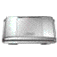
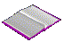

Artist statement
Trinh (b. 1998) is a multidisciplinary artist and designer based in San Francisco. Her work explores the softness of memories and dreams as they intersect with present-day apathy. Working across various mediums, she uses gentle figures and muted colors to depict everlasting girlhood against scenes of quiet existence, creating a wistful visual narrative. Her practice is inspired by subtle femininity, memories of stationery stores, and the charm of 2000s video games

.Welcome to my digital garden
When I was younger, I would dream of the day that I'd have enough resources to purchase my own set of encyclopedias

. There was something so satisfying about having all that knowledge gathered into one compact, complete, and organized collection. However, I began to realize that no analog collection could ever truly be complete so long as time kept passing. Information evolves with time, and maintaining a complete body of knowledge can be impractical when bound to physical media. I moved on from my encyclopedia dream after I discovered how digital archives could remain complete even as information changed. Time stamps, edits, revisions—there was a sense of comfort in knowing that a website could act as an ever-evolving source of truth for any given topic.It's imperative to point out that the internet was a different place before web design patterns became standardized. This cycle has always been the same with emerging technologies, from cameras and phones to speakers. The process of finding the most usable design always leads to creative and novel explorations along the way. Years after a standard design is established, there is often a yearning for the playfulness that was lost with the era of exploration. The internet is no exception to this cycle, and I often find myself missing the naivety that came with the 2000s era of personal web.
I've practiced extended cognition through the computer for as long as I can remember… it really is a foundational tool for how I create and explore. I've also always wanted a small, digital space for me to nourish and blossom with all things 'me'. This digital garden is my attempt to bring those two things together: a dense, evolving archive of self that is housed in a little corner of the internet that is entirely my own. It's truly a space that exists solely for me, by me.
Selected clients
Exhibitions
- XingXing Mini Riso Show, San Francisco, 2025
- COYSEIO 2025 H/S HANNAM POP-UP, Seoul, 2025
- Seaglass Mag - Nautilus Launch Exhibition, && Gallery, Los Angeles, 2024
Features
- Between softness, dreams, and memories, KaleidoscopeStore, 2026
- 코이세이 오랑 협업한 도자기 작가 Trinh..?, HWEEK 휙, 2025
This is a personal, non-commercial website. Image assets are collected from around the web and used here as decorative elements. Ownership of these materials remains with their respective creators. If you are the rights holder of any material featured and would like it credited or removed, please contact info [at] trinh.studio.